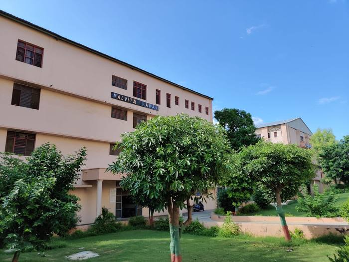

College Engineering Project
Rainwater Harvesting
Sustainable water management for our campus — turning every monsoon into a groundwater deposit instead of a drain.
Collect rainwater
Recharge groundwater
Reduce water wastage
College Engineering Project
Sustainable water management for our campus — turning every monsoon into a groundwater deposit instead of a drain.
The problem
Falling
Groundwater table, year on year
About the project
A simple, low-cost method of collecting and storing rain instead of losing it as runoff — guided from rooftops and open ground straight back into the soil.
Collect rooftop rainwater efficiently and recharge groundwater naturally.
Reduce dependence on external water supply and promote a greener campus.
Large rooftops, wide roads and open lawns make an ideal catchment layout.
Two approaches
Rain falling on building roofs is collected through gutters and pipes, then filtered before storage or recharge.
Rainwater flowing over open ground and roads is channelled through drains into recharge pits or ponds.
Our campus
Rain falling on rooftops can be collected through a network of gutters and downpipes.



The journey of a raindrop
Fixed along the edge of the rooftop, gutters collect the water flowing off the roof, and downpipes carry it down to the ground.
Removes the first dirty flow of rainwater, keeping leaves, dust and debris away — improving the quality of collected water.
Layers of sand, gravel and charcoal filter out fine dirt and small particles, ensuring cleaner water reaches the pit.
A dug pit filled with layers of filter media lets water slowly seep into the soil, directly recharging the groundwater table.
Stores extra water for gardening and cleaning, while the inspection chamber allows the system to be checked and cleaned easily.
Try it yourself
Water Harvested = Roof Area × Rainfall × Runoff Coefficient
Estimated water recharged / year
640 m³
6.4 lakh litres / year
Use your campus's actual roof area and local rainfall data for a real estimate. Values above are illustrative.
Before you dig
Sandy soil absorbs and passes water faster than clay.
Depth should be enough to allow smooth recharge.
Enough area is needed for the pit and storage tank.
The payoff
Improves the water table year after year.
Saves rain that would otherwise run off.
Supports gardens and open green areas.
Cuts dependency on external water supply.
Plan ahead
Every system needs upkeep
Be realistic
Planning estimate
Approximate / planning estimate